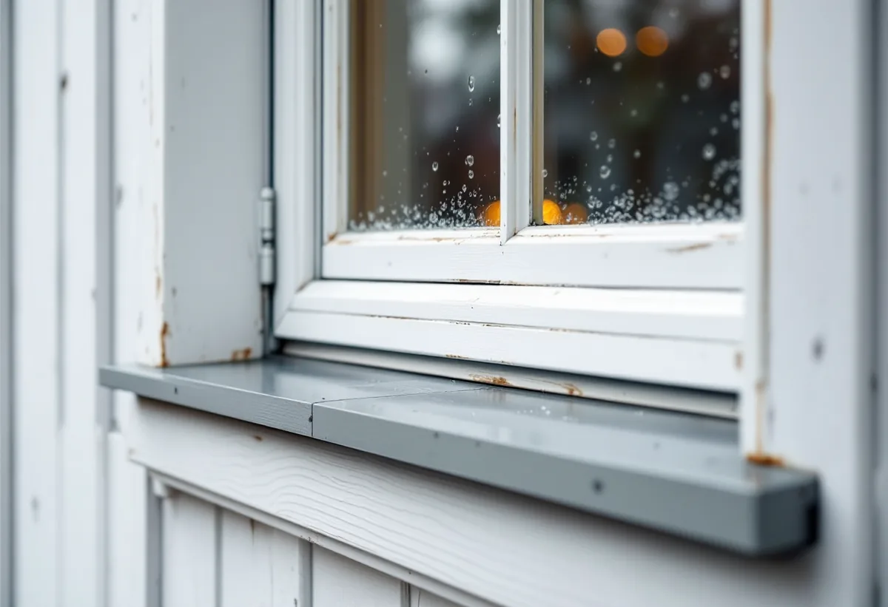

Inventering
Vi går igenom fönster, omfattningar och bröstningar och letar fukt där slagregnet tar.
Längs Saltsjöbanan står villor från sekelskiftet med småspröjsade fönster, tegelvillor i nationalromantik och hus från 1900-talets mitt med stora panoramafönster. Geal Entreprenad AB byter och renoverar fönster i hela Nacka, går igenom kommunens kulturmiljöunderlag innan något beställs och lämnar ett skriftligt kostnadsförslag efter ett gratis platsbesök.
Kommunens kulturmiljöprogram Villasamhällen vid järnvägen beskriver sekelskiftets villasamhällen som terränganpassade, med svängda gator, stora tomter och påkostade villor i tidstypisk panelarkitektur. Programmet konstaterar att här finns exempel på landets främsta villaarkitektur från olika perioder.
Fönstren skiljer sig mellan epokerna. På Solsidan visar programmet en tegelvilla i nationalromantisk stil från 1913, ritad av Ferdinand Boberg, där småspröjsade fönster och mycket muryta hör till stilen. I Saltsjö-Duvnäs nämns en stenvilla från 1910-talet med småspröjsade fönster och högt tegeltak. Programmet visar också en villa från 1900-talets mitt med stora panoramafönster och olika material i fasaden.
Även de yngre husen har sina detaljer. Radhusområdet Vita Raden i Saltsjö-Duvnäs från 1967 beskrivs som 1960-talsmodernism med vita betongelement och tunna fönsterprofiler. Ett nytt fönster med grövre profiler syns på ett sådant hus lika tydligt som på en sekelskiftesvilla.

För Tattby, Solsidan och de andra villasamhällena återkommer samma förhållningssätt i programmet: tidstypisk utformning av grundmurar, fasader, tak, fönster, fönsteromfattningar, entrépartier, räcken och staket behålls. På Solsidan och i Tattby finns många välbevarade villor som programmet beskriver som känsliga för förändringar, och där eftersträvas att befintliga tak, fasader och fönster bevaras.
Programmet skriver också att antikvarisk medverkan kan krävas inför en bygglovsprövning, och att planläggning med skydd av kulturvärden ska eftersträvas i områden med äldre detaljplaner. Den som planerar ett fönsterbyte i ett av de här områdena bör därför räkna med att utformningen kan behöva redovisas noga.
I praktiken betyder det att fönstren ska ha samma indelning och liknande profiler som de gamla, och att omfattningarna runt fönstren får sitta kvar eller göras om i samma utförande. Boverket lyfter också fram material, proportioner, indelning och profilering som det som ger ett fönster dess uttryck.
Nacka kommun räknar nya fönster eller dörrar, och ändringar av befintliga, som fasadändringar. Inom detaljplan krävs inte längre bygglov för fasadändringar på en- eller tvåbostadshus, men bytet måste stämma med detaljplanen.
Ligger fastigheten i ett område som enligt 8 kap. 13 § PBL är särskilt värdefullt gäller utökad lovplikt för fasadändringar som påverkar områdets karaktär. I kommunens webbkarta visar lila markering byggnader och områden med särskilt höga kulturvärden, och orange att kulturvärdena kan vara under bedömning. Stadsbyggnadsservice kan svara på frågor om de orange områdena. Påverkar arbetet den bärande konstruktionen, till exempel när en öppning görs större, krävs en anmälan.
Utanför de markerade områdena är ett byte till fönster med samma utseende normalt en enkel åtgärd, men varsamhetskravet gäller fortfarande. Boverket nämner fönster bland de åtgärder som kan påverka en byggnads karaktärsdrag, och på en villa från sekelskiftet är det svårt att byta fönster utan att det syns från gatan. Därför stämmer vi av indelning och profiler med dig innan beställningen.
Boverkets energiguide påpekar att gamla fönstertätningar ofta släpper igenom vatten under fönstren, särskilt där väggen utsätts för slagregn i vindutsatta lägen. Innan ett fönster byts bör man därför undersöka om det finns fuktskador i väggen och om fönstret behöver kompletteras med fuktskydd.
På de branta tomterna mot vattnet tar vissa fasader mycket vind. Där kontrollerar vi särskilt bröstningen under fönstret, fönsterbänkens anslutning och att fönsterblecket leder vattnet ut från väggen. Behöver fasaden lagas runt fönstren, läs mer under fasadrenovering i Nacka.
Boverket nämner också solavskärmning, eftersom bättre isolerade fönster ökar risken för övertemperatur inomhus. På stora panoramafönster mot söder eller väster är det värt att tänka på glasval och solskydd redan när fönstren beställs.
Vi går igenom fönster, omfattningar och bröstningar och letar fukt där slagregnet tar.
Kulturmiljökartan och detaljplanen stäms av innan fönstertyp väljs.
Indelning, profiler och glas väljs så att de passar husets ålder och läge.
Fönster, montage, omfattningar och bleck redovisas var för sig.
Fönstren byts ett i taget, med drevning, tätning och fuktskydd under fönstret.
Vi går igenom varje fönster tillsammans med dig och visar hur de sköts.
Skatteverket godkänner rotavdrag i småhus för att reparera eller byta ut fönster, montera isolerglas och bullerglas och byta fönsterbleck. Solfilm, myggnät och markiser ger inget avdrag. Det är arbetskostnaden som ger avdrag: 30 procent av den, med högst 50 000 kr per person och år och 75 000 kr som tak för rot och rut tillsammans.
Geal gör avdraget direkt på fakturan.
Antal och storlek på fönstren, om indelning och profiler ska anpassas till en äldre villa, om omfattningarna ska göras om, om väggen under fönstren behöver lagas och om stora glaspartier kräver särskilt glas eller lyft. Branta tomter kan kräva mer ställning. Efter ett kostnadsfritt platsbesök får du ett skriftligt kostnadsförslag.
Byta eller renovera fönster.
Fönsterbyte i Stockholm →Takbyte, takbesiktning och plåtarbeten.
Takläggare i Nacka →Saltsjöbaden, Boo och Älta.
Takrenovering i Nacka →Villastäder, sommarhus och radhus.
Badrumsrenovering i Nacka →Sommarvillor, stugor och villor i Nacka.
Fasadrenovering i Nacka →Sommarvillor, stugor och hus med källarplan.
Golvläggare i Nacka →Radhuskök, sekelskiftesvillor och vedspis.
Köksrenovering i Nacka →Panelvillor och sommarnöjen i Nacka.
Målare i Nacka →Farledens plåttak och Saltsjöbadens villor.
Plåtslagare i Nacka →Verandor, panel och altaner.
Snickare i Nacka →